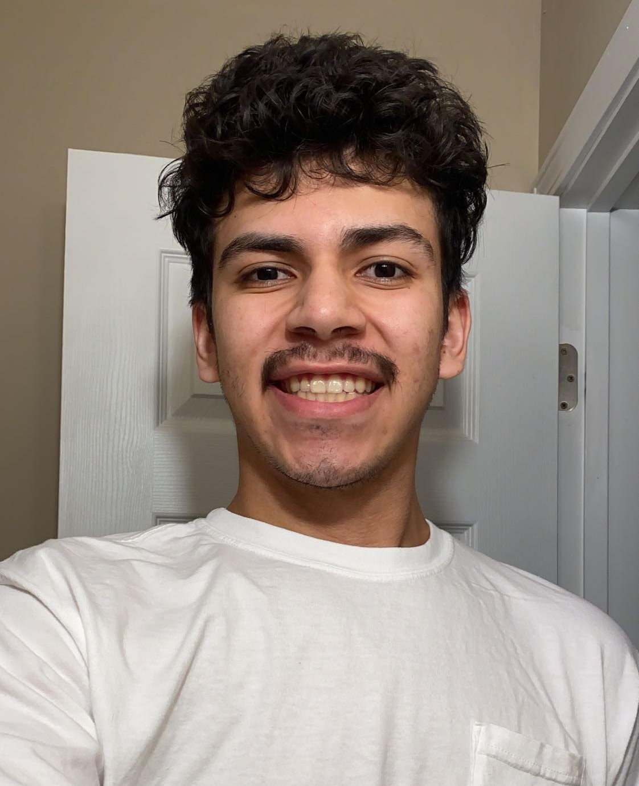
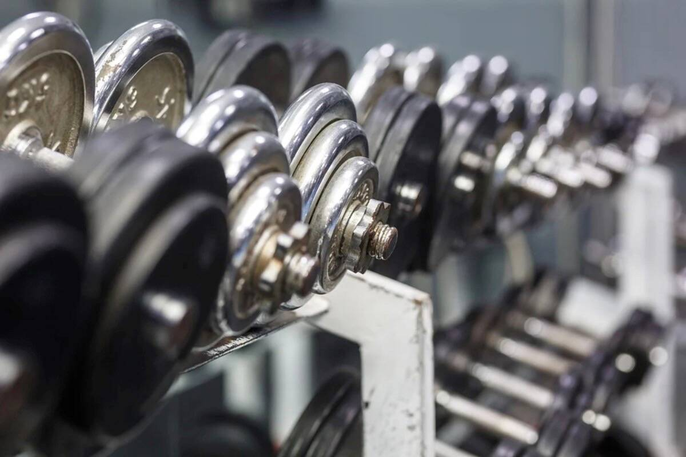

This Picture is of me when I went to Missouri on a retreat with my fraternity. It was one of my greatest weekends with the guys and definitely the most memorable.
We rented out a mansion and were able to grow as brothers.
Embark on this webpage and find out who this ugly person above is.
Who I am

I'm 21 years young and pursuing a bachelors degree in computer graphics technology.
I've had previous goals of working for a big business like google, apple, or tesla. In 5 year
I see myself working as a full time employee at a graphic design company or business that'll kick
start my career as a graphic designer.
Why I chose to come to IUPUI and Indianapolis was because I wanted to experience what it was like
to live in the city and give me an experience outside of living in the country where nothing goes on.
My family resides in a small town called Ligonier up in NorthEastern Indiana, I have 3 sister and no brothers, and
I have a big family that lives in the town.
Physical Activity

Regularly during the school year I aim to hit the gym about 3 to 4 times based on how busy I am with school and work.
I've started hitting the gym for my health due to the fact I was being very inactive and huge motivator was my cousin Michael
who encouraged me to go out to the gym with him and told me to stop being lazy. With his help over the past year I gained about
40lbs of mass and never felt better.
Used this as a final and we were told to recreate a famous artist style of work and use an endangered species in Indiana and I choose the Least Weasel.
Recreated a poster I choose of the internet and used this for a final.
I used photo of me and my fraternity and edited it to enjoy christmas.
Above are images I've used to post on my social media as well as using them for my final. My favorite overall picture I've worked on is the spiderman poster because I used it for a final and recieve a really good grade. It took about 10 hours to create, but it well worth it in the end. You can click on each photo to get an even closer look.